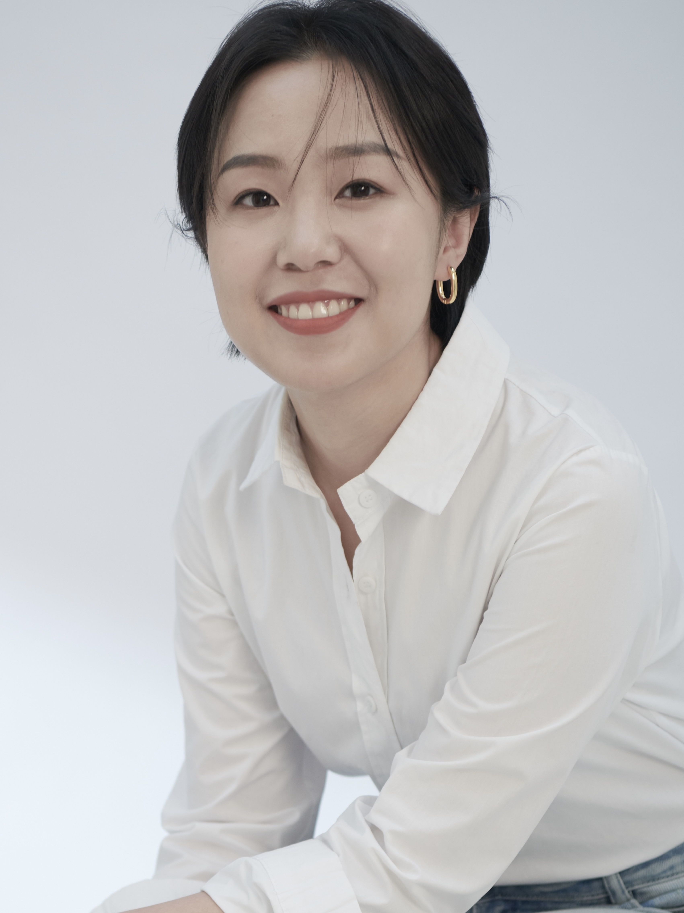

旅德青年指挥 | Conductor

本科毕业于中央音乐学院指挥系并保送研究生，师从夏小汤教授、郑小瑛教授。辅修录音艺术指导专业并获得毕业证书。求学期间曾荣获中国国家奖学金。随后旅德就读于德国国立罗伯特舒曼音乐学院 (Robert Schumann Hochschule Düsseldorf) 学习指挥和钢琴，以满分成绩毕业并获硕士学位。
留德期间师从著名德国指挥家、教育家 Rüdiger Bohn 教授与 Christian von Gehren 教授，并随 Timo Nuoranne 教授辅修合唱指挥。曾参加吕嘉、Jorma Panula、Ulrich Windfuhr 等著名音乐家的大师班，并获得高度评价。
She graduated with a Bachelor`s degree from the Conducting Department of the Central Conservatory of Music and was directly admitted to postgraduate study, where she studied under Professors Xia Xiaotang and Zheng Xiaoying. She also minored in Recording Art Direction with a certification of completion. During her studies, she was awarded the China National Scholarship. She was also studied conducting and piano at the Robert Schumann Hochschule Düsseldorf, Germany, graduating with a Master`s degree and achieving the highest marks.
While in Germany, she studied under the renowned German conductor and educator Prof. Rüdiger Bohn and Prof. Christian von Gehren, and took a minor in choral conducting under Prof. Timo Nuoranne. She participated in masterclasses led by renowned musicians such as Lü Jia, Jorma Panula and Ulrich Windfuhr, receiving high praise.
曾任中国爱乐乐团青少年交响乐团指挥、北京理工大学合唱团指挥。在德国期间，曾担任埃森交响乐团 (Essener Symphonie Orchester)、埃森青年交响乐团 (Essener Jugend Symphonie Orchester) 和下萨克森州青年爱乐乐团 (Jungend Philharmonisches Orchester Niedersachsen) 的助理指挥。在歌剧与清唱剧领域，她曾在《艺术家的生涯》(La Bohème)、《蝴蝶夫人》(Madame Butterfly)、《托斯卡》(Tosca)、《女人心》(Così fan tutte)、《创世纪》(Die Schöpfung)、《以利亚》(Elias)、《风流寡妇》(Die lustige Witwe) 及《伤逝》等项目中担任助理指挥和合唱指挥。
作为 AIR 现代乐集 (AIR Contemporary Music Collective) 首席指挥，自乐团 2018 年成立以来,成功首演数十部现代作品及室内乐歌剧,并执棒杭州现代音乐节等重要演出。2025年起任教于北京市东岸音乐学校,担任指挥专业助教和合唱课教师,策划并成功上演多场专题音乐会。
She has served as conductor of the China Philharmonic Youth Symphony Orchestra and the Beijing Institute of Technology Choir. Whilst in Germany, she served as assistant conductor for Essener Symphonie Orchester, Essener Jugend Symphonie Orchester and Jungend Philharmonisches Orchester Niedersachsen. In the field of opera and oratorio, she has conducted La Bohème, Madame Butterfly, Tosca, Così fan tutte, Die Schöpfung, Elias, Die lustige Witwe.
As Principal Conductor of the AIR Contemporary Music Collective, she has, since the ensemble`s founding in 2018, successfully premiered dozens of contemporary works and chamber operas, and has conducted major performances such as the Hangzhou Contemporary Music Festival. Since 2025, she started teaching at the Beijing Eastbank Music of Academy, serving as a teaching assistant in the conducting programme and a choral teacher, whilst also organising and performing numerous concerts.